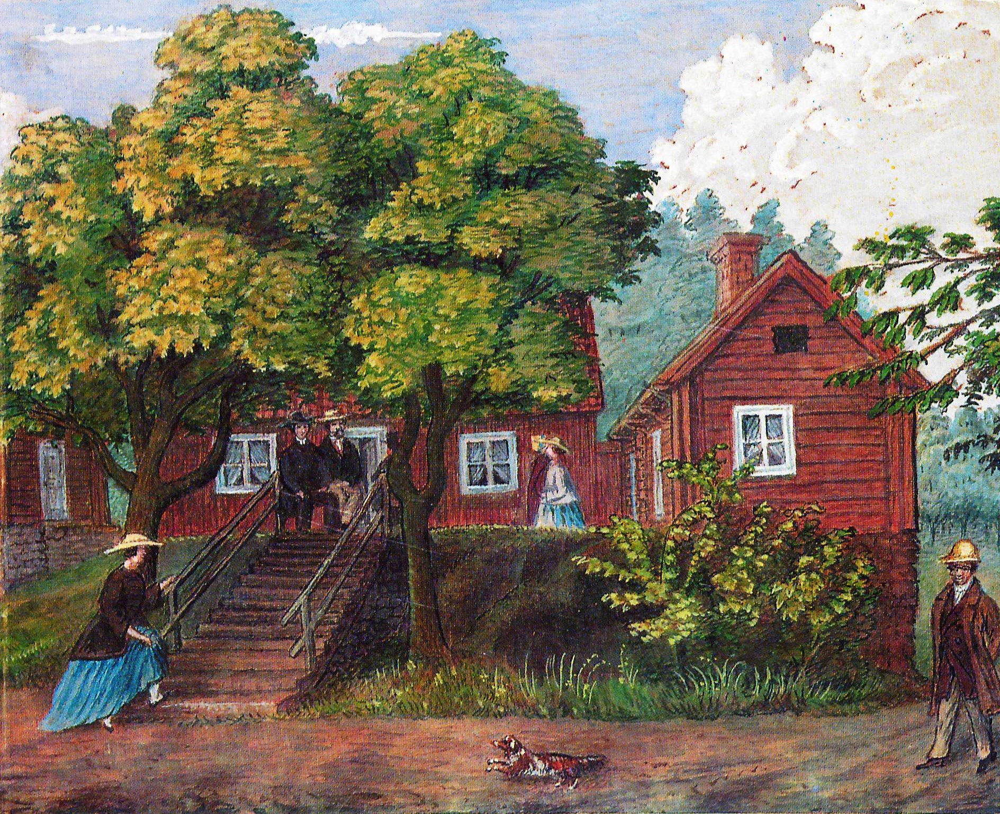

Att anlägga en surbrunn
Om projektet
|
Om Sätra Brunn
|
Att anlägga en surbrunn rekonstruerad
|
Att anlägga en surbrunn inskannad
|

ATT ANLÄGGA EN
SURBRUNN
En studie kring Sätra brunns första utbyggnad
AV OVE HIDEMARK
Tillbaka
Nästa
Transkribering:
Martina Jansson och Elina Isebring